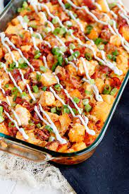

Buffalo Chicken and Roasted Potato Casserole

Description
For those who love to eat Buffalo wings and baked potatoes, this meal would hit the spot. Especially if you're short on time, constantly busy with work, and have to take care of your kids, you've come to right place. This recipe was adjusted with some shortcuts to taste even more delicious
Ingredients
- Cooking Spray
- Hot pepper sauce
- Garlic powder
- Olive oil
- Crumbled bacon
- Paprika
- Potatoes
- Chicken Breast
Steps
- Heat ingredients in skillet over low heat and stir
- Bake potatoes until tender inside
- Spread chicken cubes over potatoes
- Bake in oven until chicken is cooked thoroughly